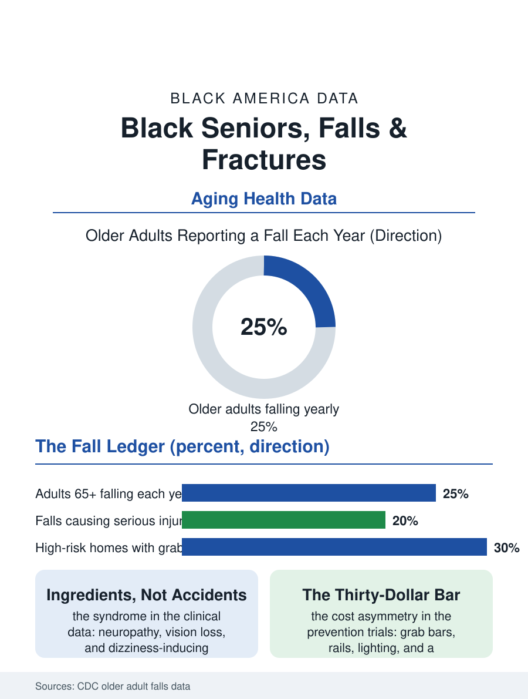

Black Public Health
The Bathroom Door at 2 A.M.: Falls and Older Black Adults
Falls assemble from the atlas's other conditions meeting a deferred-maintenance house, and the repair is sometimes a thirty-dollar grab bar. The falls file.

A fall is the most common injury event of old age, and for older Black Americans it arrives against a specific background: high rates of the conditions that destabilize, diabetes, neuropathy, vision loss, blood pressure medication, and homes, porches, and neighborhoods whose physical fabric raises the risk. Falls send millions of older Americans to emergency departments yearly, and the fracture that follows is one of geriatric medicine's turning points. This article reads the falls file.
The Mechanics of the Fall
The Centers for Disease Control and Prevention's older adult data describe the fall as a syndrome with ingredients rather than an accident with a cause: muscle weakness and gait change, the neuropathy of the diabetes file dulling the feet's information, the cataract and glaucoma of the vision file dimming the step's edge, the blood pressure and psychiatric medications whose side effects include the dizziness that precedes the descent, and vitamin D and bone density deciding whether the descent ends in a bruise or a fracture. The racial pattern in the data is genuinely mixed, and the honest file says so: self-reported fall rates among Black older adults measure somewhat below white rates in several national surveys, while the consequences data run heavier, hip fracture treatment and outcomes carrying the disparities of the hospital file, and fall deaths in the vital statistics have been rising in all groups with the Black rates converging upward. The home environment writes the environmental half: the falls literature's checklists, stairs without rails, bathrooms without grab bars, rugs, cords, dim bulbs, describe with embarrassing precision the housing stock of the older Black homeowner in this atlas, the paid-off house whose maintenance has been deferred by the fixed income that owns it, so that the falls file and the housing file share a mailing list.
After the Fracture
The hip fracture is geriatrics' feared sentence: a substantial share of patients never regain their prior mobility, mortality in the following year runs high, and the outcome distribution tracks the system's quality variables, time to surgery, rehabilitation intensity, and the discharge destination. The data show Black patients waiting longer for fracture surgery in a number of hospital studies and discharged to rehabilitation at rates that differ from white patients with the same injury, converting a standardized injury into the atlas's standard gradient. The rehabilitation file's workforce, the physical therapists of the employment pages, is where the recovery is actually manufactured, session by session, and its access geography decides who walks out of the fracture chapter and who wheels. The fall's psychological sequel is its own clinical entity: the fear of falling restricts activity, restriction deconditions the muscles that prevent falls, and the cycle tightens, a loop the exercise interventions, tai chi and the structured balance programs, demonstrably interrupt when they are offered in the neighborhoods where the loop runs, which the program data show happening unevenly, the senior centers of the affluent suburbs offering the evidence-based classes while the Black Belt's seniors meet the same risk with the church exercise ministry and the mall walkers, the community's own versions, effective in proportion to their structure.
Prevention Is a Home Repair
The prevention file's charm is its concreteness. The interventions with trial evidence are a medication review that deprescribes the dizziness, a vision correction, a strength and balance program, and a home modification visit, grab bars, rails, lighting, rug removal, whose total cost is a rounding error against a single hip fracture's bill, and whose delivery systems exist in scattered excellence: the aging network's home repair programs, the occupational therapist's home safety evaluation, the community paramedicine visit. Their distribution across Black neighborhoods is the file's policy question, since the modifiable home is precisely the long-tenured Black-owned home whose owner qualifies for every program and is enrolled in few, the application and awareness gap this atlas records from the 529 to the apprenticeship. The falls file closes at the bathroom door at 2 a.m., the single most dangerous threshold in the older American's geography, where a thirty-dollar grab bar and a night-light divide the two futures the fracture data describe. Few pages in this atlas reduce so completely to a shopping list and a screwdriver. The file's request of its readers, officials and families alike, is to notice that the distance between the disparity and its repair is sometimes exactly that small, and to be embarrassed, productively, by every year it goes unclosed.
More in Black Public Health
Hypertension Among Black Adults: Prevalence, Control, and Consequences
About 55 percent of Black adults have hypertension — the highest rate of any U.S. group. Prevalence, onset, control, and the stroke, heart, and kidney consequences in the data.
Diabetes Among Black Adults: Prevalence and Complications
Nearly one in five Black adults has diabetes, diagnosed or undiagnosed — and its complications fall with particular weight. The CDC data on prevalence, control, and outcomes.
Black Life Expectancy: The Gap at Birth and Its Causes
Black life expectancy at birth is about 73 years, roughly five years below the national figure — the summary measure of every health gap in this section. The CDC data.
Source: Centers for Disease Control and Prevention, older adult fall surveillance (STEADI); geriatric outcomes literature; Medicare data.